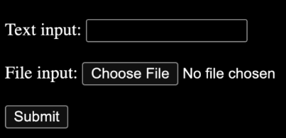
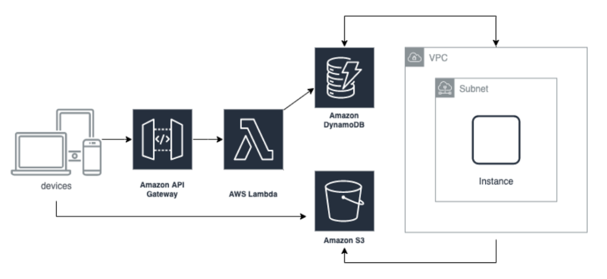

TreeviewCopyright © aleen42 all right reserved, powered by aleen42
-
-
- [要提交您的项目，请发送 jobs@fovus.co 并附上以下标题为“编码挑战提交 - [全职 | 全职] 的电子邮件” 实习生] - [这项新工作的最早工作开始日期]”](#要提交您的项目，请发送-x6a111x62x73x40x66x6f118x75115x2ex63111-并附上以下标题为编码挑战提交---全职--全职-的电子邮件-实习生---这项新工作的最早工作开始日期)
-
解读
翻译
系统组件
- 具有文本输入和文件输入的响应式 Web UI（使用 ReactJS）
- 文本输入：“[InputText]” // [ ]表示字符串可更改
- 文件输入：[InputFile].txt
- [InputFile].txt内容：“[文件内容]”
- 提交按钮 
- 直接从浏览器将输入文件上传到 S3（不要将文件内容直接发送到 Lambda）
- S3路径：[BucketName]/[InputFile].txt
- 通过 API 网关和 Lambda 函数将输入和 S3 路径保存在 DynamoDB FileTable 中
- id : [1] 通过 nanoid 自动生成 id
- 输入文本：[输入文本]
- 输入文件路径：[BucketName]/[InputFile].txt
- 文件上传到 S3 并添加到 DynamoDB 后，通过 DynamoDB 事件触发在 VM 实例 (EC2) 中运行的脚本。
- 自动创建新虚拟机
- 将脚本从 S3 下载到 VM（通过 CDK 或以编程方式将脚本作为输入文件上传到 S3）
- 在虚拟机中运行脚本
- 按 id 从 DynamoDB FileTable 获取输入
- 将输入文件从 S3 [BucketName]/[InputFile].txt 下载到 VM
- 将检索到的输入文本附加到下载的输入文件并将其另存为[OutputFile].txt
- [OutputFile].txt 内容：“[文件内容]：[InputText]”
- 将输出文件上传到 S3
- S3路径：[BucketName]/[OutputFile].txt
- 将输出和 S3 路径保存在 DynamoDB FileTable 中
- 编号：[1]
- 输出文件路径：[BucketName]/[OutputFile].out.txt
- 自动终止虚拟机

基本要求
- 使用 AWS CDK 管理 AWS 基础设施（最新版本）
- 使用适用于 Lambda 的 AWS 开发工具包 JavaScript V3（最新版本，而非 V2）
- 不要将任何 AWS 访问密钥/凭证放入您的代码中。
- 没有 SSH，也没有硬编码参数。
- 您的参数/变量名称是读者友好的。
- 您在 S3 中的 txt 文件不公开。
- 请勿使用任何 AWS Amplify 前端和后端资源。
- 遵循 AWS 最佳实践。
- 在 DynamoDB FileTable 中保存输入和 S3 路径后，您的系统将创建一个新 VM（不是预先配置的 VM）并触发脚本自动运行并进行错误处理。
奖金
- 尽早提交是一个很大的优势
- 使用 AWS Cognito 作为 API 网关授权方
- 您的前端代码托管在 S3 或 Amplify 中（不是后端）
- 使用 Flowbite TailwindCSS 和 ReactJS 实现响应式 UI
要提交您的项目，请发送 jobs@fovus.co 并附上以下标题为“编码挑战提交 - [全职 | 全职] 的电子邮件” 实习生] - [这项新工作的最早工作开始日期]”
- 演示 - 屏幕截图或视频
- 您的源代码（不要压缩）在 Cloud Drive 或与 xuanyi@fovus.co 共享的私人 git 存储库中（请不要将其放在任何公共 git 中）
- 关于如何设置和运行代码的自述文件（确保我可以按照您的步骤部署您的代码并对其进行测试）
- 您用于编码的参考列表。
- 你最新的简历。
- 您在接下来的两周内可以接受我们的在线面试。
- 如果您符合资格（完成所有基本要求），您将在 5 天内收到我们的面试邀请。